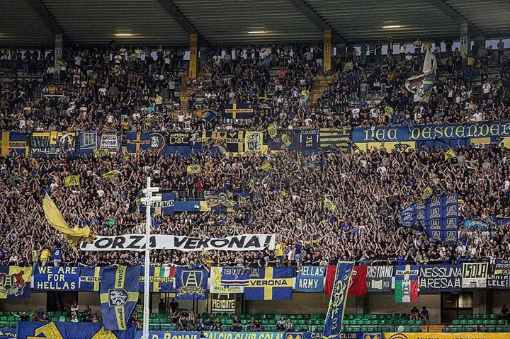

Fu progettato dall'ing. Leopoldo Baruchello secondo una soluzione molto rara nel panorama degli impianti sportivi italiani, ovvero sovrapponendo tre ordini di scalinate. Inaugurato il 15 dicembre 1963, ha sostituito il vecchio e omonimo stadio comunale che era sito nella zona di piazza Cittadella. È dotato di una pista di atletica ad otto corsie che nell'agosto del 2010 è stata rivoluzionata (la vecchia pista si era deteriorata) e sostituita da una nuova pista in asfalto, dipinta con i colori blu e giallo e aperta al pattinaggio. La sua capienza è variata nel corso degli anni, soprattutto dopo i mondiali di Italia 90 quando vennero coperti tutti i settori ed eliminati i posti liberi. Attualmente è di 42 160 posti, distribuiti su un parterre (di cui solo la parte est è oggi aperta al pubblico, limitatamente ai disabili e ai loro accompagnatori), tre anelli sovrapposti (poltronissime, tribuna e tribuna superiore) ed una tribuna stampa (182 posti). Soprannominato all'epoca della costruzione stadio dei quarantamila, il Bentegodi si presenta all'interno come un ampio anfiteatro a forma ellittica. È intitolato alla memoria di Marcantonio Bentegodi, storico benefattore dello sport veronese del XIX secolo. Progettato per rimpiazzare il vecchio "Bentegodi" che esordì nel 1910, il nuovo stadio, costato circa un miliardo di lire dell'epoca (11420000 €) fu inaugurato il 15 dicembre 1963 in occasione dell'incontro di serie B tra Verona e Venezia, vinto 1-0 da quest'ultimo.. L'affluenza record fu registrata il 23 gennaio 1983 in occasione di Verona-Roma, 47 896 spettatori (di cui 38 767 paganti e 9 129 abbonati). Nella stagione 1984-85 fu il teatro della conquista dello scudetto da parte del Verona, mentre nell'annata 2000-01 vide la prima promozione in Serie A del Chievo. Nel 1985 iniziarono i lavori di costruzione del terzo anello e della copertura, in vista dei Mondiali di calcio Italia 1990. Lo stadio quindi si ingrandiva ma senza una significativa variazione del numero dei posti in quanto venivano allargati i percorsi di fuga e venivano installati i seggiolini numerati. Nei Mondiali di calcio Italia 1990 il Bentegodi ha ospitato il gruppo E (Belgio, Corea del Sud, Spagna, Uruguay) e l'ottavo di finale fra Spagna e Jugoslavia. Il record di spettatori del Bentegodi ampliato e coperto si avrà il 6 novembre 1988 con un Verona-Milan da 47.798 spettatori (35.077 paganti e 12.721 abbonati), inferiore di 98 persone al record del 1983. Fu anche sede della finale del campionato di rugby 1996-97 tra Benetton Treviso e Milan, incontro vinto dai veneti per 34-29.

La curva Sud è storicamente riservata ai tifosi dell'Hellas Verona, mentre dalla stagione 2015-16 la curva Nord è riservata ai supporter del Chievo, dopo una piccola "lotta" durata diversi anni per ottenere la curva che, per motivi organizzativi, il comune non concedeva loro; conseguentemente, i tifosi ospiti prendono posto nella curva Nord Superiore in occasione delle partite casalinghe degli scaligeri, e nella curva Sud Superiore in occasione delle sfide interne dei clivensi. La tribuna Ovest (lato delle panchine) è invece attrezzata per la stampa[7]. Il terreno di gioco misura 105x68 m. Tra luglio e dicembre del 2009 sulla copertura del Bentegodi è stato installato un impianto fotovoltaico del valore di circa 4 milioni di euro e della potenza nominale di circa 1 MW (9591 m² di pannelli per una potenza di 999 kWp), diventando così il primo stadio solare d'Italia ed il più grande impianto fotovoltaico d'Italia su una struttura sportiva, grazie all'installazione di 13 328 pannelli solari; con il ricavato dall'energia prodotta vengono coperti ampiamente i costi di manutenzione dell'impianto sportivo. Il 13 ottobre 2010 l'impianto ospitò un incontro della nazionale di rugby a 15 dell'Italia, contro l'Argentina e terminato con la sconfitta degli Azzurri con il punteggio di 16 a 22. Il 6 aprile 2014 il Bentegodi ospitò per la prima, e allo stato attuale unica, volta il terzo club professionistico cittadino, il Virtus Verona, impegnato in Lega Pro contro l'Alessandria.
